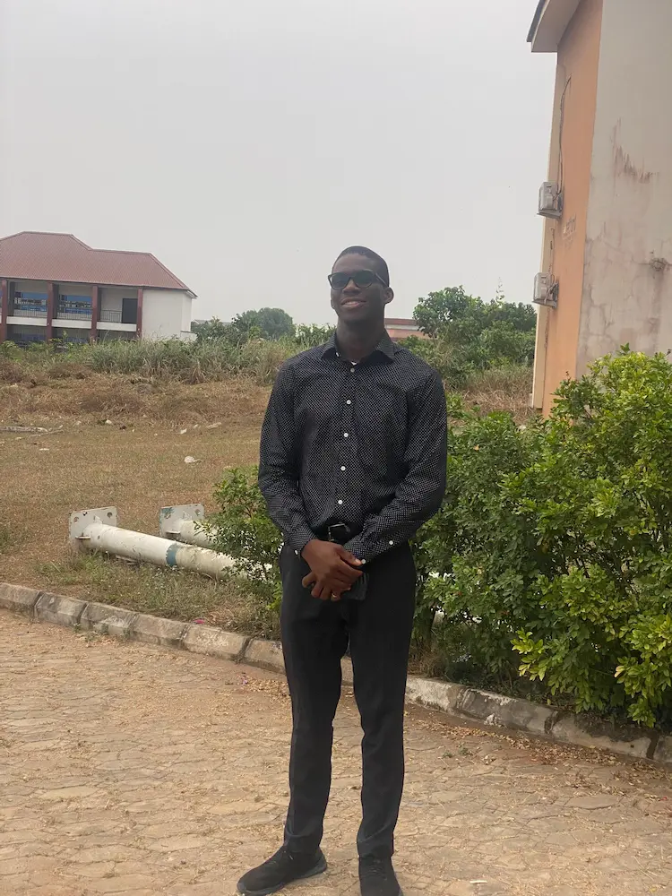

Bright Obinna | WDD 130

My name is Bright Obinna. I am a Nigerian and live in Rivers State, but my state of origin is Imo State. I am the first born of my parents among 5 children.
I love sports to ensure I am fit and have a healthy body. Recently, I and my friend Marcel trained for and ran a half marathon race. Asides sports, I love technology and count myself blessed for being born in a such a technological era.
I have a strong foundation using Python programming language, and a basic knowwledge of Data Science and System Design and Architecture. I am also learning to use the Linux Operating System.
Currently I do not have Windows on my PC again - I am using Arch Distro of Linux OS.
I am loving forward to earning a degree in Software Development to boost my employability. br
It is also interesting to know that I am good record keeper. I love to keep record and I learnt this from my Dad. As a skill, I have tried to learn how to touch type, but I am not good at that yet.
I am looking forward to learn more and have a great time during this course.